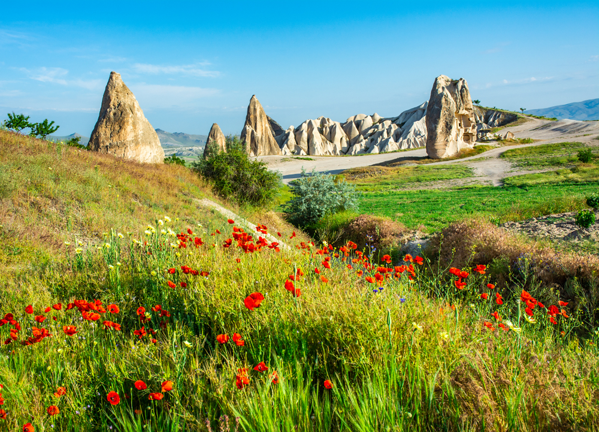

Efsanelere konu olan bir diğer ağaç da Anadolu Siğlasi. Türkiye'de Güney Ege ve Bati Akdeniz bölgelerinde sinirli alanlarda yetişen ve “Günlük Ağaci” olarak da nitelenen siğla, 20 metreye kadar boylanabilir ve görünüş olarak çinari andirir.
Anadolu Siglasi

Kapodokya Lalesi
Kapadokya soğanı, Nevşehir Kapadokya yöresinde yetişen endemik bitkilerden. Küçük küçük bir sürü çiçekten oluşan Kapadokya soğanı, haziran ve ağustos ayları arasında çiçek açar.
Kazdagi Goknari
En fazla Kazdağları’nda görülür. Çamgiller ailesinde yer alan Kazdağı Göknarı 1883 yılında keşfedildiğinde başka bir Göknar türünün varyetesi sanıldı, daha sonra yeni bir tür olduğu anlaşıldı. Adını antik Truva kentinden alıyor.

Mus Lalesi
Muş ve Bulanık Ovaları’nda görülen bu tür, botanik turizminin gelişmesinde önemli rol oynadı. Bitki gözlemciliği yapan turistler ve bilim insanları sayesinde yerel sosyal ve ekonomik açıdan kalkınmasına büyük katkılar sağlayan bir lale çeşidi. Kış aylarının bitimine doğru görülüyor.
Eber Sarisi
1982 yılında keşfedilen Eber Sarısı, sadece Akşehir ve Eber göllerinin yamaçlarında doğal olarak bulunuyor. Nesli tükenmekte olan bitkiler arasında yer alan Eber Sarısı, sarı çiçekli, otsu ve 40-80 cm arasında uzunluğa sahip. En önemli özelliği bir çiçekten 3 meyve vermesidir.
Van Ters Lalesi
Birçok din ve kültür için hüznün sembolü kabul edilmiş en eski süs bitkisi olan Ters Lale, efsanelere de konu olan bir bitki. Ters lale, Anadolu coğrafyasına ait endemik bitkilerden ve dünya üzerinde bilinen 165 türü ve alt türü bulunuyor.